Dashboard administrativo
Usuarios, solicitudes, pendientes, transportistas y conductores, con validación de costos de transporte que se salen de la referencia y acciones rápidas.
Desde la solicitud del cliente hasta el pesaje en planta: coordinación sincronizada con SAP, asignación a transportistas con costo por contrato o spot, cupos de recepción, Control Tower con GPS, documentación de flota, portería, romana y rentabilidad por viaje.
portal.certidesk.cl/logisticaParte de IntegralFlex Suites
LogistFlex ordena la operación de transporte entre la empresa, sus clientes y los transportistas externos. Los clientes registran sus solicitudes de retiro o transporte, y el equipo de coordinación las valida y les asigna fecha. Luego las encomienda a un transportista, que confirma el viaje o propone otra fecha desde su propio portal y asigna la patente y el chofer.
La coordinación trabaja sobre las notas de venta sincronizadas desde SAP. Cada asignación calcula el costo según el contrato vigente o una tarifa spot (por kilómetro o por valor total, con peajes), cotizado con la ruta GPS. El planificador fija cuántas notas de venta puede recibir la planta cada día, y el panel avisa lo que está atrasado, sin fecha o esperando respuesta.
En la planta, la Control Tower muestra en un mapa los camiones que se acercan, la portería registra ingresos y salidas, y la romana pesa la entrada (bruto) y la salida (tara) para obtener el neto descargado. La gerencia sigue los costos y el margen de cada viaje en el reporte de rentabilidad, y cada movimiento queda en la auditoría.
Usuarios, solicitudes, pendientes, transportistas y conductores, con validación de costos de transporte que se salen de la referencia y acciones rápidas.
El cliente crea su solicitud de retiro con tipo de servicio, material o residuo, estado físico, clase de peligrosidad, peso, formato y cantidad. Indica comuna, camión sugerido, ubicación exacta en el mapa, contacto en terreno, fecha y hora, y sigue sus solicitudes activas e historial con el comprobante PDF de portería.
Coordinación aprueba o rechaza cada solicitud, la asocia a su nota de venta SAP y verifica que la dirección sirva para navegar con GPS. Alerta las críticas con más de 48 horas y guarda el historial de estados: programado, en tránsito, en planta, en descarga, pesaje y finalizado.
Panel ejecutivo conectado a SAP con el uso del crédito, la deuda y las notas de venta pendientes de cada cliente, alerta de límite excedido y la opción de bloquear un retiro antes de coordinarlo.
Indicadores de viajes sin asignar, atrasados, sin fecha o esperando confirmación. Avisos de lo que requiere atención, la programación completa con sus finanzas y exportación a Excel.
Trae las notas de venta con su ubicación desde SAP para coordinarlas, sin digitarlas de nuevo.
El coordinador elige al transportista según el tipo de camión y su capacidad, y define origen, destino y fuente del costo: contrato vigente, spot por kilómetro o spot por valor total con peajes. Cotiza la ruta GPS y envía el viaje al transportista.
Límite de notas de venta que la planta puede recibir cada día, con cupos visibles para los próximos 7 días en el panel de coordinación.
El transportista confirma, propone una nueva fecha o rechaza el viaje con su motivo. Coordinación aprueba y notifica al cliente, o reasigna.
Viajes asignados, por confirmar, propuestas y confirmados, con buscador por nota de venta, cliente, comuna o patente. El transportista acepta el viaje asignando patente y chofer de su flota, propone otra fecha o lo rechaza con su motivo. En Mi Flota registra sus camiones y choferes y carga su documentación.
El chofer ve el pedido, el cliente y el punto de retiro. Abre la navegación en Google Maps o Waze, envía su posición GPS, guarda el punto exacto, sube la evidencia fotográfica de la carga a SharePoint y marca el retiro realizado para ir a planta.
El cliente ve en un mapa su retiro con el camión asignado, el estado del viaje, la distancia y la hora estimada de llegada considerando el tráfico.
Seguro obligatorio, revisión técnica, licencias, hoja de vida y comprobantes previsionales por camión y chofer, con revisión de vencimientos de contratos y licencias.
Empresas con código SAP, RUT, flota inicial (tipo de camión, ejes y capacidad) y acceso web. Conductores con clase y vencimiento de licencia.
Distancia, tiempo estimado con tráfico, peajes según la clase del vehículo y costo total por contrato, exportable a CSV, con dashboard de peajes.
Tarifas por transportista y tipo de camión, que se usan para costear cada viaje.
Mapa en tiempo real con una geocerca alrededor de la planta, alertas de arribos cercanos y la carga (notas de venta) de cada camión.
Programación semanal de ingresos, registro del ingreso real por patente y bitácora de salidas del día.
Pesaje de entrada (bruto) y de salida (tara) con cálculo del peso neto descargado y estado del camión en patio o fuera de la planta.
Ingreso, costo, peajes y margen por viaje, con reporte de rentabilidad para la dirección.
Perfiles de administrador, coordinación, transportista, portería, romana, gerencia y cliente. Modo superusuario y registro de auditoría de cada movimiento.
Pantallas reales del sistema con datos de demostración: los nombres de clientes, empresas y direcciones son ficticios.
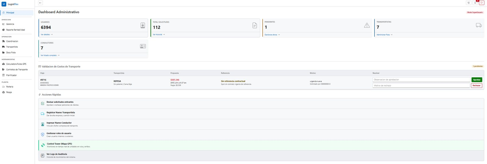
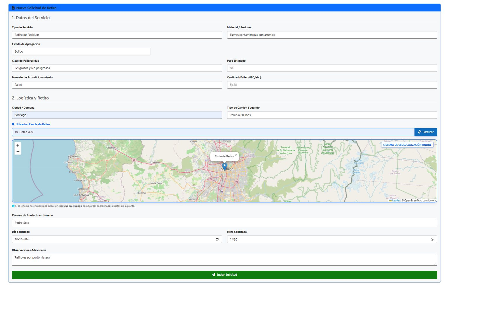
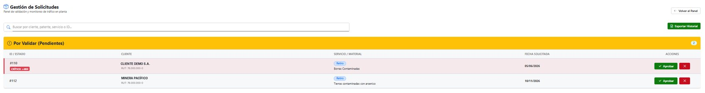
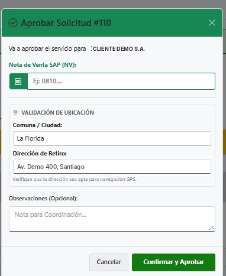
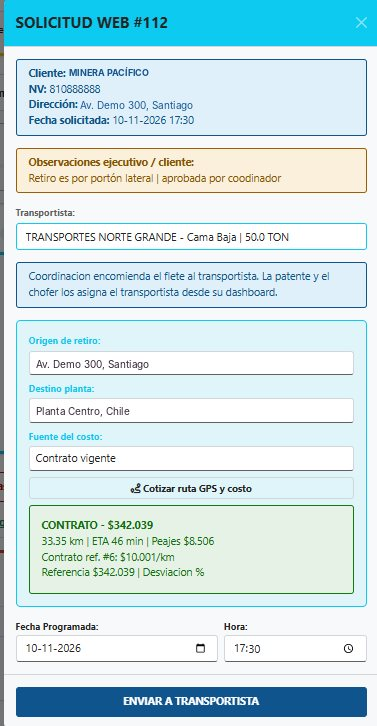
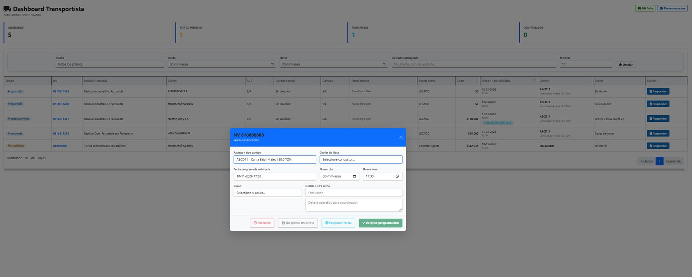
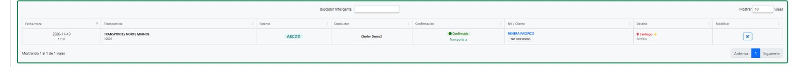
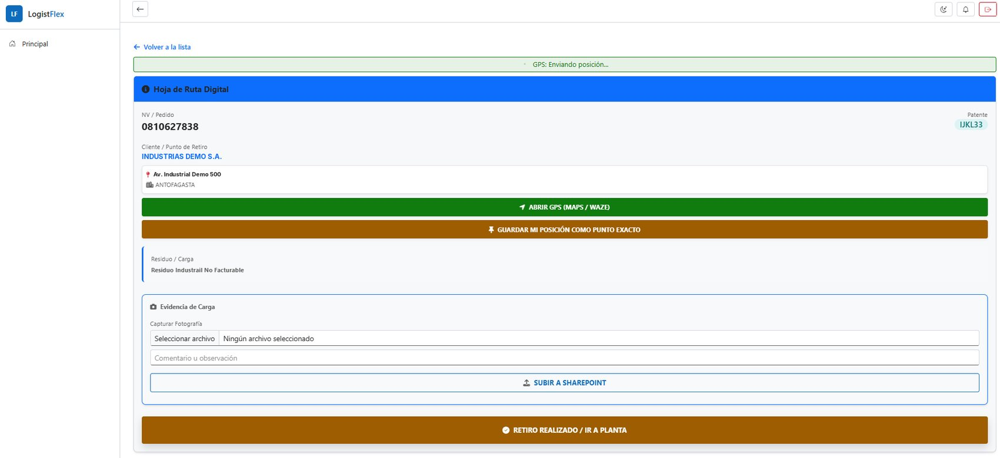
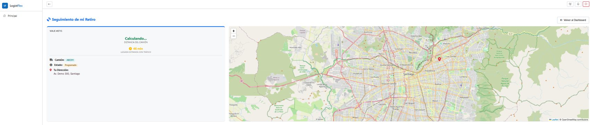
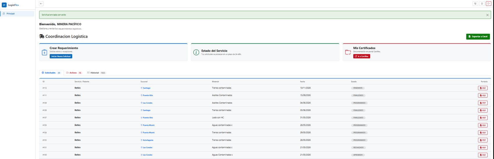
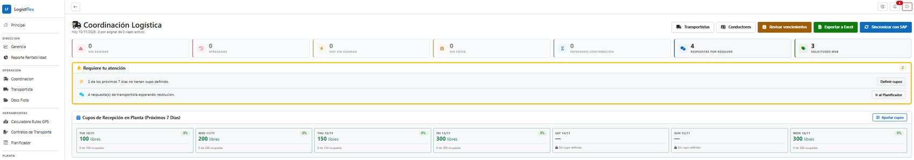
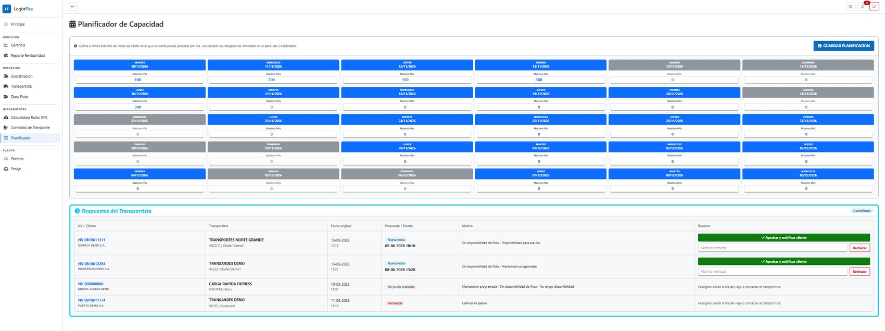
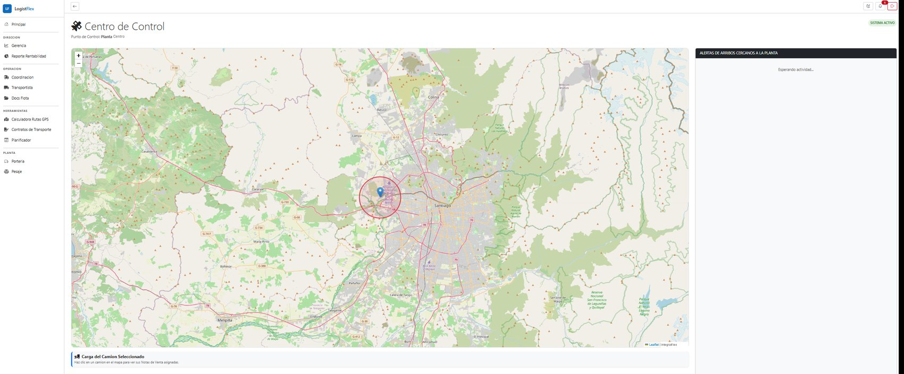
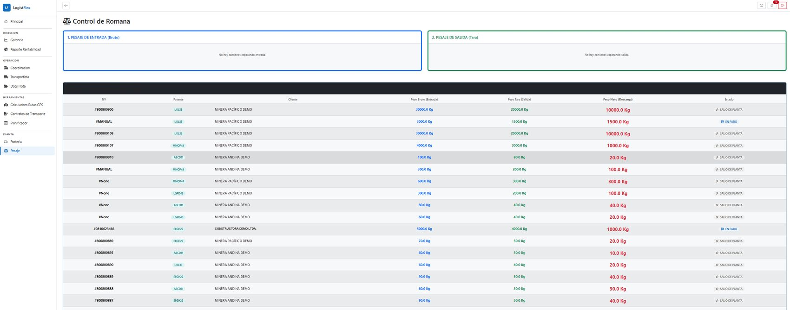
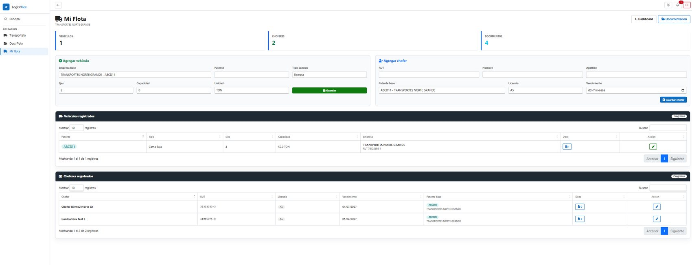
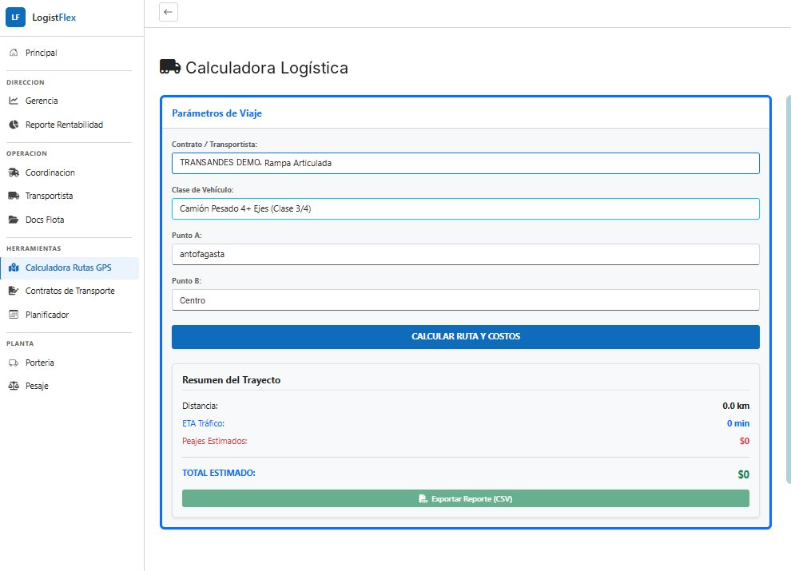
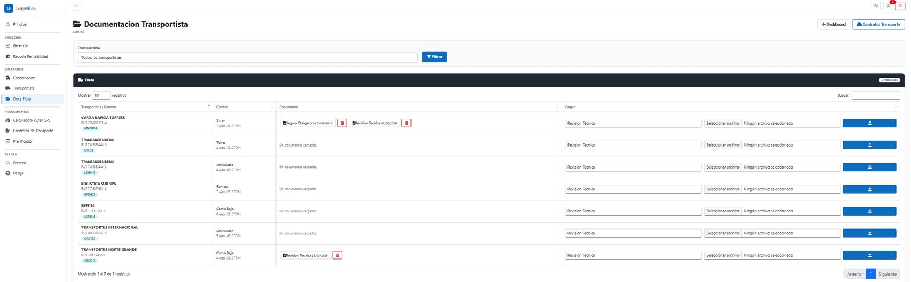
El cliente crea el retiro en su portal, con material, peligrosidad y ubicación exacta en el mapa.
Coordinación aprueba la solicitud, la asocia a su nota de venta SAP y revisa el crédito del cliente.
Se elige al transportista, se cotiza la ruta GPS con peajes según el contrato o la tarifa spot, y se envía el viaje.
El transportista acepta con su patente y chofer, o propone otra fecha. Coordinación aprueba y se notifica al cliente.
El chofer sigue su hoja de ruta digital con GPS, sube la evidencia de carga y marca el retiro realizado.
El cliente ve el estado y la llegada estimada del camión en el mapa.
Control Tower, portería y romana registran el arribo, la descarga y el peso neto.
La gerencia ve el costo, los peajes y el margen de cada viaje.
Flask + PostgreSQL, mapas Leaflet
SAP (notas de venta), rutas GPS y peajes
Gunicorn + Nginx en portal.certidesk.cl/logistica
Roles por perfil, modo superusuario y auditoría
Desde USD 6,9 por usuario al mes según el tamaño de tu equipo. Cotiza en línea o escríbenos y coordinamos una demo con tus datos.